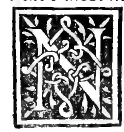

CAPITOLO VIII¶
Doue ora se trouino colonne più debitamente facte per Italia dali antichi e ancor moderni.

Non so pensare carissimi miei che el nostro compatriota Leonbatista deli alberti Fiorentino, con lo quale più e più mesi nel alma Roma altempo del pontifici Paulo Barbo da vinegia in proprio domicilio con lui a sue spesi sempre ben tractato. homo certamente de grandissima perspicacita e doctrina in humanita e rhetorica. comme apare pel suo alto dire nela sua opera de architectura. In la quale tanto ampiamente parlando non habia obseruato in epsa el morale documento: qual rende licito a cadauno douere per la patria combattere. E lui non che de facti sua de qualche parolla in dicta opera commendarla.
Anzi più presto lonore che da altri li fia atribuito li la in gran parte spento in questo architectonica faculta. Peroche Victruuio in molti luochi del suo libro la magnifica si per le colonne, comme ancora de laltre parti dicendo aleuolte depse colonne ornate Toscanico more con sua maxima commendatione. e aleuolte dicendo, vt in tuscanicis apparet. le qual cose non dice senon in laude e commendatione. El nostro Leonbatista in quelli tali luoghi dici Italico more chiamandole Italiche, e per verummodo li dici Tuscane: che certo non fia senza grandissima admiratione. conciosia che sempre da quella lui e suoi semprene sono stati honorati. Pero diro con lapostolo. Laudo vos: sed in hoc non laudo etc.
E pero me par conueniente qui dirne e di lei con lo nostro Victruuio e anche de laltre con verità, doue se trouino oggi in Italia colonne maxime rotonde che senon in tutto ma in gran parti seruano li antichi documenti: Maxime del nostro Victruuio. Ilche ancora costuma Victruuio. obseruare quando in Roma non trouaua quelle parti de larchitectura che tractaua apertamente diceua. Sed Romae tale genus non habetur sed Athenis vel alibi, comme a lui era noto. Cosi diro a voi.
In Firenze trono dieta Architectura molto magnificata, maxime poi chel Magnifico Lorenze medici sene comenzo a delectare: qual de modelli molto in epsa era prontissimo che a me fo noto per vno che con sue mani dispose al suo grandissimo domestico Giuliano da magliano del degno palazzo detto dogliuolo ala cita de Napoli doue in quel tempo me trouauo con lo nostro Catano catani dal borgo e molti altri nostri mercadanti borghesi. In modo che chi oggi voi fabricare in Italia e fore subito recorreno a Firenze per Architecti.
Si dico el vero lo effecto noi nasconde andate in firenze e per lor ville non si troua in Italia si bene con tutta diligentia hedificii formati. Doue de colonne nostre parlando trouarete in sancta croci conuento nostro al capitolode parechii dignissimamente disposte a symmetria de tutte laltre parti de dicto capitolo qual e dele degne fabriche ditalia. Ancora in sancto Spirito fabricha moderna asai aconze e ben disposte colonne e molto più senza comparation nel degno e ornatissimo patronata dela Magnifica casa di Medici Sancta Lorenzo qual fra glialtri ali di nostri in Italia fabricati non ha pare, ceteris dico paribus. In epso sonno con tutto ordine de Symmetrie e lor proportioni situate asai colonne.
Ancora nel domo de Pisa: auenga che sieno de più sorti agolupate equiui facto ne vn canneto che si comprende che de diuerse parti quiui sonno translatate. Quelle similmente secondo alcuni poste deuanze pantheon a Roma, benché sieno de grandissima mola non dimeno non hano la lor debita conuenientia daltezza alor basi e capitelli, comme si conuerebbe a iudicio de chi ben in larte sia experto. Cosi medesimamente se dici de quelle de sancto Pietro e sancto Paulo extra muros.
Ma quelle che sonno nanze a laltare de sancto Pietro facte auite forono postate da Hyerusalem traete del tempio de Salamene, delequali luna ha la immensa virtù contra li spiriti mali: comme più volte ho veduto per lo suo sanctissimo tacto che feci el nostro saluatore Jesu Christo. De queste non si da norma se non quanto aloro altezza e basa e capitello, ma non de tal viticcio: pero che pò essere più stretto e più largo alibito de lochio. el medesimo dico de quelle che in Vinegia sonno in su la piaza de san Marco.
Quali benché sien grande e grosse non obseruano la debita symmetria. pero che se ben si guarda tendano fortemente in acuzzo e pontito. Ma ben apertamente ve dico che in niuna parte de Italia mai ho veduto, ne credo ogi sia la più proportionata colonna rotonda con suo capitello e altezza e grossezza. Saluo che la non e situata in’ su la sua propria basa, ma in su vno capitello rouerso e alochio responde con tutta venusta, quale ancora non fo facta comme credo per stare in quel luogo.
Questa carissimi miei e qui nela cita de Viregia nel capitolo deli fratri menori conuento nostro detta la Ca grande doue se costuma legere dali sacri doctori nel secondo chiostro. Si che quando qui capitaste so non ve sira tedio landare a vederla e con vostro filo e instrumento comme a questi di con alcuni miei discipuli el simile ho facto etc.